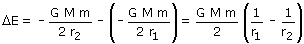
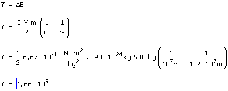

a)
Para cambiar a una órbita más alta no se sube directamente en dirección radial como pasa en las películas, simplemente se aumenta la velocidad hábilmente para describir un arco de parábola que acaba justo en la trayectoria deseada
Cambios de energía mecánica entre las órbitas inicial y final
 |

Durante el recorrido el satélite está sometido a la fuerza del cohete propulsor y a la fuerza gravitatoria. El trabajo gravitatorio ya está contado en la variación de energía potencial por tanto el único trabajo que se hace sobre el satélite es el del motor del cohete: T
Aplicando el principio de conservación:

Para cambiar la órbita del satélite el motor tendrá que comunicarle una energía de 1.66·109 J